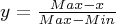
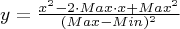
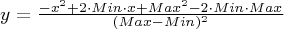
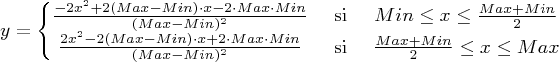
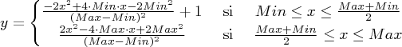
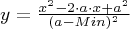
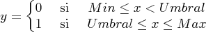
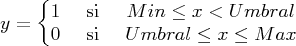

En el caso de los efectos significativos (impactos) podremos realizar una valoración tanto cualitativa como cuantitativa. Se han considerado las siguientes funciones de transformación en el modelo de la valoración cuantitativa:
Lineal creciente:

Lineal decreciente:

Parabólica creciente I:

Parabólica decreciente I:

Parabólica creciente II:

Parabólica decreciente II:

Parabólica doble creciente I:

Parabólica doble decreciente I:

Parabólica doble creciente II:

Parabólica doble decreciente II:

Máximo intermedio:

Mínimo intermedio:

Umbral creciente:

Umbral decreciente:

En la pestaña de Valoración cuantitativa podremos elegir el tipo de función de transformación (de forma manual o utilizando el asistente) e indicar los campos del indicador, sus valores máximo y mínimo, y el umbral en el caso que sea necesaria para la función de transformación. Finalmente pulsamos el botón Calcular para obtener la magnitud final.

Para elegir la función de transformación utilizando el asistente pulsaremos sobre el botón Asistente y responderemos a las preguntas hasta que obtengamos la función deseada.
Una vez calculada la magnitud podemos visualizar la grafica de la función obtenida pulsando sobre el botón Grafico.